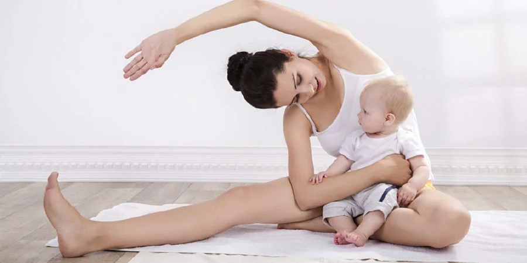
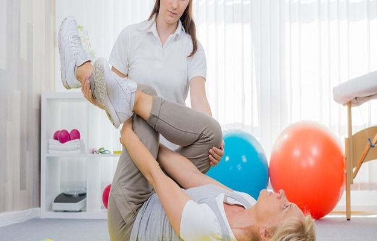
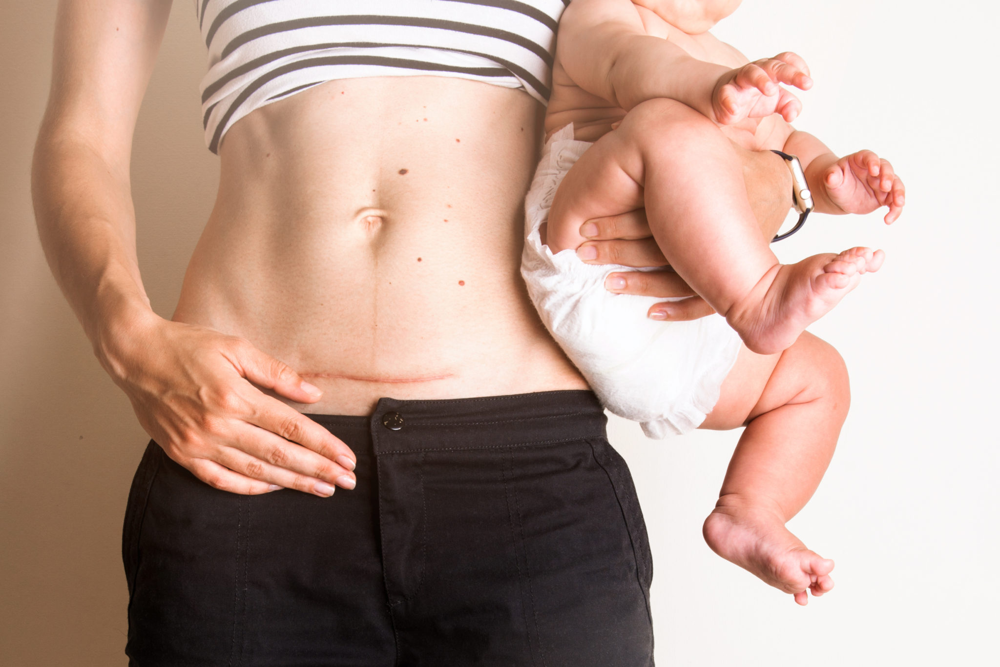

O período pós-parto é uma fase de grandes transformações e desafios para o corpo da mulher. A gestação e o parto, seja ele normal ou cesárea, impõem um estresse significativo sobre a musculatura abdominal e, principalmente, sobre o assoalho pélvico.

Fisioterapia pélvica: essencial para a recuperação pós-parto
A fisioterapia pélvica surge como um suporte essencial, oferecendo um caminho seguro e personalizado para a recuperação completa, muito além da estética.
O assoalho pélvico é um conjunto de músculos e ligamentos que sustenta os órgãos pélvicos (bexiga, útero e reto). Durante a gravidez e o parto, essa estrutura é alongada e enfraquecida, o que pode levar a diversas disfunções.
O tratamento fisioterapeútico começa com uma avaliação detalhada, que considera o tipo de parto, o tempo de pós-parto e as queixas da paciente. As técnicas utilizadas incluem:

Exercícios personalizados para a recuperação
O objetivo é restaurar a função muscular, devolver a confiança e garantir que a nova mãe possa cuidar do seu bebê e de si mesma com saúde e bem-estar.

Recuperação completa e bem-estar no pós-parto
**Se você está no pós-parto, não ignore os sinais do seu corpo. A recuperação é possível e a fisioterapia pélvica é sua aliada mais importante.**